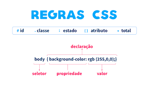

Layouts
É a forma de organização de algo - sala, site, setor. É a forma de disponibilização dos itens em um site.
 Exemplo de Layout
Exemplo de Layout
- Hierarquia Visual: Ordem que os elementos são mostrados
- Contraste: Enfatiza elementos importantes
- Espaçamento: Legibilidade e clareza do design
- Repetição e Consistência: uso padrão de cores, fontes, estilos par coesão do site
- Fluxo e direção: Usar linhas, formatos e hierarquisas para guiar o olhar do usuário
UX/UI (User experiene/User interface) - cuida das funcionalidades, adaptabilidade e da experiência sensorial do usuário
Tipos de Layout
- Layout Fixo: larguras fixas e não adaptáveis
- Layout Fluído: unidades relativas, conforme o tabanho da tela, usado em porcentagem
- Layout Responsivo: muda os tamanhos de acordo com a tela - media queries
- Layout Adaptativo: varios tamnhos fixos para diferentes resoluções, carregando diferentes versões para cada dispositivo
- Layout de Grade: sistema de colunas e linhas CSS Grid
- Layout de Página Única: navegação em uma página
- Layout em Camadas:
Para construir Layouts usamos a propriedade Display

Nomenclaturas de elementos CSS
É importante usarmos medidas relativas na construção do site - em porcentagem - para que ele se dapite aos tamanhos de tela
Sempre dividir o código em partes, até o CSS